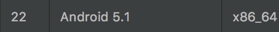
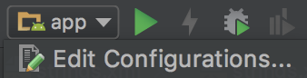
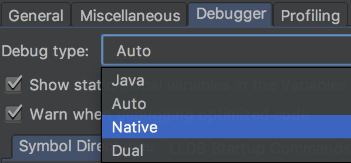
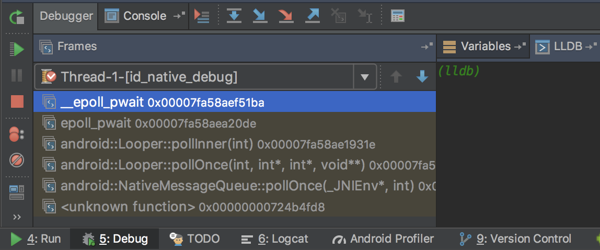
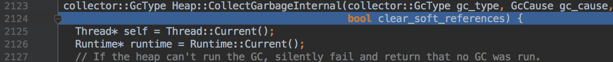

在開發或是解bug的過程中，有時我們需要先理解Android原始碼運作的原理，僅僅是閱讀並不能完全了解運作時的變化。
透過IDE，我們可以在程式碼上設定breakpoint，藉此逐步查看執行時產生的變化，但這僅限於Java層的原始碼。
而將自行編譯AOSP得到的image，掛載在模擬器上，我們也可以順利在Native層設定breakpoint，就如同在Java層一樣。
以下會用MacOS為主要環境，並分成兩大部分介紹從環境設定，到掛載image並設定breakpoint的過程：
- 編譯AOSP。
- 掛載image，設定breakpoint並執行。
其他OS步驟大同小異，請對照官方文件閱讀
編譯AOSP
先列出這邊我的環境設定：
- MacOS 10.13
- Xcode 9.3
- JDK 1.7
而我選用的Android版本是：
- Build name - LMY48X
- AOSP version - android-5.1.1_r25
版本對應
由於最後是要與模擬器產生連結，且IDE針對Android-22所使用的核心版本是android-5.1.1_r25。所以我們在選擇AOSP的branch時也用android-5.1.1_r25的版本。另外，JDK也必須設定成Android-22對應的版本1.7。
其餘版本對應可以參考以下兩個網址：
- https://source.android.com/setup/start/build-numbers#source-code-tags-and-builds
- https://source.android.com/setup/build/requirements
建立編譯環境
JDK
是1.8則直接至官網下載安裝。是1.7可以至此鏡像網站下載。另外建議可用jEnv來做版控。
Xcode
直接在AppStore上下載即可。
Xcode command line
安裝指令：
xcode-select --install |
安裝後簽署同意書：
sudo xcodebuild -license |
MacPorts
編譯所需套件要透過此軟體安裝，直接到官網下載安裝。安裝後執行：
sudo port -v selfupdate |
這樣就完成MacPorts的設定，可以透過man port確認安裝完成。
修改環境變數PATH，並確認/opt/local/bin在/usr/bin之前：
export PATH=/opt/local/bin:$PATH |
Repo
要下載AOSP得用專用的指令，但這指令一般用不到，所以可以選擇建立在帳號的目錄下：
mkdir ~/bin |
透過curl下載安裝：
curl https://storage.googleapis.com/git-repo-downloads/repo > ~/bin/repo |
編譯所需套件
POSIXLY_CORRECT=1 sudo port install gmake libsdl git gnupg |
提高檔案開啟上限
編譯時是多條執行緒同步執行，提高預設上限避免產生問題：
ulimit -S -n 1024 |
Trouble shooting
Error: zlib, ncurses: no destroot found
執行以下指令後重試：
sudo port clean zlib ncurses |
Error: active failed
依照提示執行相對指令，如zlib則是：
port -f activate zlib |
建立專用磁區
在Mac上編譯AOSP需要case sensitive的磁區，執行以下指令建立：
hdiutil create -type SPARSE -fs 'Case-sensitive Journaled HFS+' -size 150g ~/android.dmg |
執行後會產生android.dmg.sparseimage的檔案。
如要修改磁區大小：
hdiutil resize -size <new-size-you-want>g ~/android.dmg.sparseimage |
由於AOSP整個原始碼佔用空間很大，建議設定150g以上，以避免編譯時產生空間不夠的錯誤。
下載AOSP
先掛載專用磁區：
hdiutil attach ~/android.dmg.sparseimage -mountpoint /Volumes/android |
如果要卸載：
hdiutil detach /Volumes/android |
建立資料夾並進入：
mkdir aosp |
建立git專用的帳號，如本身有在用git這布應是不用，可用git config -l確定：
git config --global user.name "Your Name" |
初始化repo和要抓的版本，這邊依照前面介紹選擇android-5.1.1_r25：
repo init -u https://android.googlesource.com/platform/manifest -b android-5.1.1_r25 |
接著就可以下載了：
repo sync |
如有遇到網路問題或是需要鏡像給多人使用，請直接參考官方文件。
編譯AOSP
編譯前最好都先清除上一次編譯產生的檔案：
make clobber |
再透過內建的script做環境設定：
source build/envsetup.sh |
接著需要再選一次編譯類型，這邊要注意CPU類型是x86或x86_64，建議與電腦本身的CPU類型相同，我在編譯時就因此而編譯失敗：
lunch aosp_x86_64-eng |
之後要建立模擬器時，選用的CPU類型也需要與此對應。
接著就可以開始編譯了，執行緒數量建議是CPU核心數乘以2來達到最大效率，乘3以上較無意義：
make -j16 |
編譯完成後會全部都放在/Volumes/android/aosp/out/target/product/generic_x86_64底下，連同我們所需要的system.img。
Touble shooting
Can not find SDK 10.6
新版本的Xcode並沒有舊版的SDK，可以透過以下兩個途徑取得：
- 如有開發者帳號，可直接至開發者頁面下載Xcode 4.1。下載後從
Contents/Developer/Platforms/MacOSX.platform/Developer/SDKs底下取得MacOSX10.6.sdk。 - 到好心人phracker的github下載。
FAILED: /bin/bash -c “prebuilts/misc/darwin-x86/bison/bison
錯誤訊息不一定相同，就是和bison相關。解法是自己手動編譯，先到bison的目錄底下：
cd /Volumes/android/aosp/external/bison |
取得修正的commit：
git cherry-pick c0c852bd6fe462b148475476d9124fd740eba160 |
執行編譯，使用mma可以自動編譯相依套件：
mma |
將編譯後的bison複製到misc底下：
cp /Volumes/android/aosp/out/host/darwin-x86/bin/bison /Volumes/android/aosp/prebuilts/misc/darwin-x86/bison/ |
掛載image，設定breakpoint並執行
編出image，最難的部分就結束了。
掛載image
建立Android - 22的模擬器：

接著用指令開啟：
emulator -avd <emulator name> -verbose -no-boot-anim -system <path to the system.img> |
如果沒將emulator位置加入環境變數PATH，可以在
~/Library/Android/sdk/tools/emulator底下找到。需要emlator的名字，可以透過
-list-avds查到所有目前已建立的模擬器。emulator的詳細指令可以用
-help-all或查看官方文件。
修改run config：

將debugger改成native模式：

然後以debug模式編譯並裝載app：
切到debug tab，暫停，並切換到LLDB：

設定breakpoint並執行
在這我們以最常見的GC為範例下breakpoint：
br s -n CollectGarbageInternal |
輸出結果只看出是斷在libart.so中，並沒有其他有用訊息。所以我們必須要與對應的實際libart.so做連結：
add-dsym /Volumes/android/aosp/out/target/product/generic_x86_64/symbols/system/lib64/libart.so |
如此再列出剛下的breakpoint：
br list |
此時就會有完整的位址訊息，代表完成建立與檔案的連結，在我們觸發breakpoint時，就會成功定位到檔案內對應的位置：

如果此時還沒有辦法正確跳轉，唯一可能就是AOSP是在其他電腦上編譯。
可以先用source info查看在.so內對應的路徑：
source info |
應該會看到另一台電腦上的路徑，再透過以下指令完成路徑的連結：
settings set target.source-map /Volumes/android/aosp/android-5.1.1_r25/ <local path>/android-5.1.1_r25 |